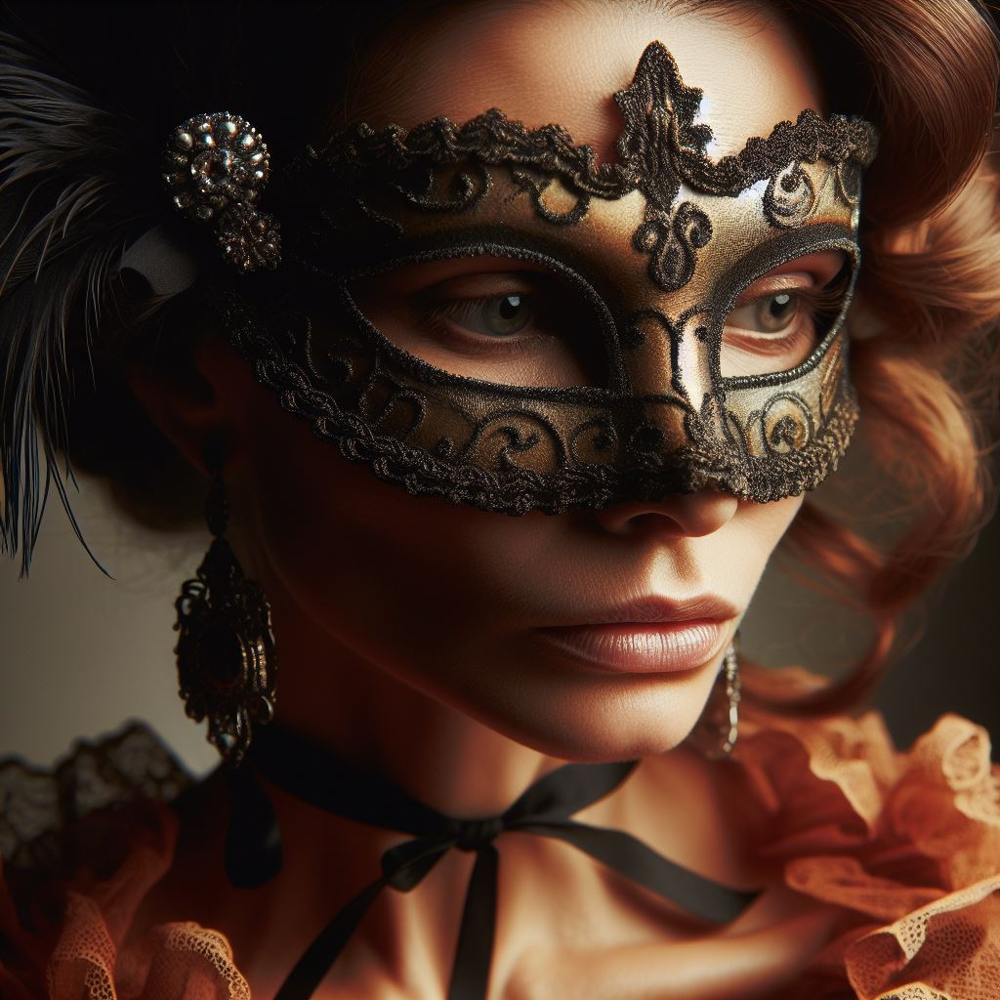

Description : Une mondaine raffinée et charismatique, célèbre pour ses soirées élégantes et son sens du style incomparable. À première vue, elle incarne l'image de la perfection dans la haute société, mais derrière son masque d'élégance se cachent des secrets sombres.
- Motivations : Marguerite est animée par le désir de maintenir son statut social et sa réputation impeccable dans la haute société. Elle est prête à tout pour préserver les apparences, même si cela signifie sacrifier sa propre félicité pour entretenir une façade de perfection et de respectabilité.
- Relations : Marguerite est une amie proche de Lady Eleanor Vauderbilt, avec qui elle partage de nombreux intérêts et une passion pour le maintien des apparences. Elle entretient également des relations cordiales avec d'autres membres de la haute société, mais garde toujours une certaine distance émotionnelle pour protéger ses secrets.
- Secrets : Marguerite entretient secrètement une liaison passionnée avec un homme marié depuis plusieurs années. Elle est profondément éprise de lui mais consciente du risque que cette relation fait peser sur sa réputation si elle était révélée au grand jour. Pour préserver son statut social et éviter le scandale, elle garde cette liaison strictement confidentielle, ne laissant aucune trace de ses rencontres clandestines.
- tensions : Bien que Marguerite soit admirée pour son charme et sa prestance dans les cercles sociaux, elle ressent également une pression constante pour maintenir les normes rigides de la société. Ses relations avec d'autres femmes de la haute société sont teintées de rivalité silencieuse, chacune cherchant à surpasser les autres dans la quête de perfection et de statut. De plus, la menace constante de la révélation de sa liaison secrète pèse lourdement sur Marguerite, alimentant sa paranoïa et son anxiété à mesure que la nuit du bal masqué progresse.